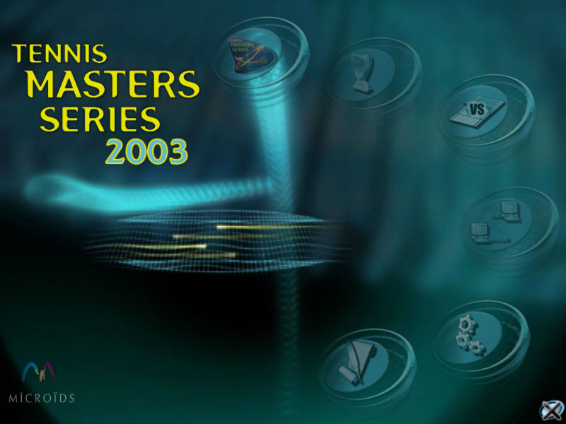
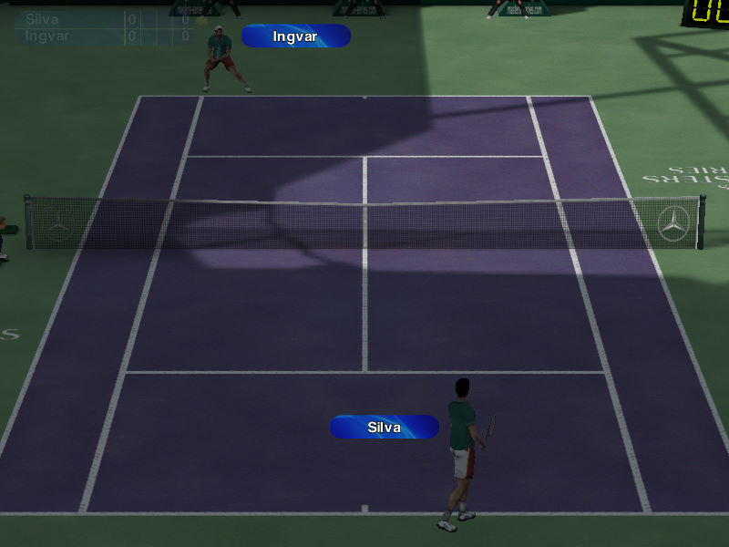

名稱：網球大師系列2003 (Tennis Masters Series 2003，英文版) 簡介：Microids 2002年出品的網球遊戲，由1C代理發行 [待補]。   備註：本版遊戲光碟雖有部份中文化，但僅限於安裝與啟動的部份，其餘內容仍都是英文。 保護：光碟Laserlok v5 檔案：tms2003_patch 1.1_us.rar = 1.1更新檔 nocd10.rar = 1.0免光碟檔 nocd11.rar = 1.1免光碟檔

